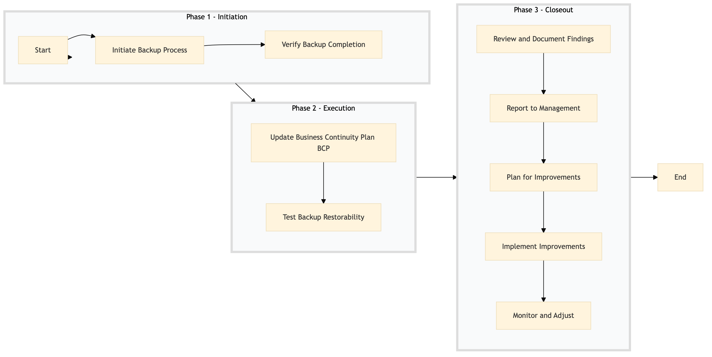

| Role | Steps |
|---|---|
| IT Operations Manager | 1.1 1.2 2.1 2.2 3.1 3.2 3.3 3.4 3.5 |
| Step | Name | Role | System | Input | Output | KPI | Dec? | Exc? | Pain Point / Risk |
|---|---|---|---|---|---|---|---|---|---|
| 1.1 | Initiate Backup Process | IT Operations Manager | Oracle OPERA Cloud, IDeaS G3 RMS | Backup schedule and configuration files | Started backup process logs | Less than 5 min | N | Y | Network connectivity issues can delay backups. |
| 1.2 | Verify Backup Completion | IT Operations Manager | Oracle OPERA Cloud, IDeaS G3 RMS | Backup logs and system status reports | Backup completion confirmation report | Less than 10 min | Y | N | Manual verification can be time-consuming. |
| 2.1 | Update Business Continuity Plan (BCP) | IT Operations Manager | Microsoft Power BI, Salesforce | Current BCP document and recent backup logs | Updated BCP document | Less than 15 min | N | Y | Complexity in maintaining up-to-date BCPs. |
| 2.2 | Test Backup Restorability | IT Operations Manager | Oracle OPERA Cloud, IDeaS G3 RMS | Latest backup files and test environment setup | Restoration success report | Less than 20 min | Y | N | Testing can disrupt normal operations. |
| 3.1 | Review and Document Findings | IT Operations Manager | Microsoft Power BI, Salesforce | Backup logs, restoration reports, and BCP updates | Audit report with findings and recommendations | Less than 30 min | N | Y | Detailed documentation can be cumbersome. |
| 3.2 | Report to Management | IT Operations Manager | Microsoft Power BI, Salesforce | Audit report and BCP document | Management presentation slides | Less than 1 hour | N | Y | Effective communication of complex technical information. |
| 3.3 | Plan for Improvements | IT Operations Manager | Microsoft Power BI, Salesforce | Audit report and management feedback | Action plan with timelines and responsible parties | Less than 1 hour | N | Y | Identifying actionable improvements from audit findings. |
| 3.4 | Implement Improvements | IT Operations Manager | Oracle OPERA Cloud, IDeaS G3 RMS | Action plan and resources | Implementation status report | Less than 2 weeks | Y | N | Resource allocation and coordination for improvements. |
| 3.5 | Monitor and Adjust | IT Operations Manager | Oracle OPERA Cloud, IDeaS G3 RMS | Implementation status report and system performance data | Adjusted action plan or new improvement initiatives | Ongoing monitoring | Y | N | Continuous monitoring and adjusting can be resource-intensive. |
This process ensures regular data backup and business continuity at a Marriott full-service hotel to protect critical systems and data.